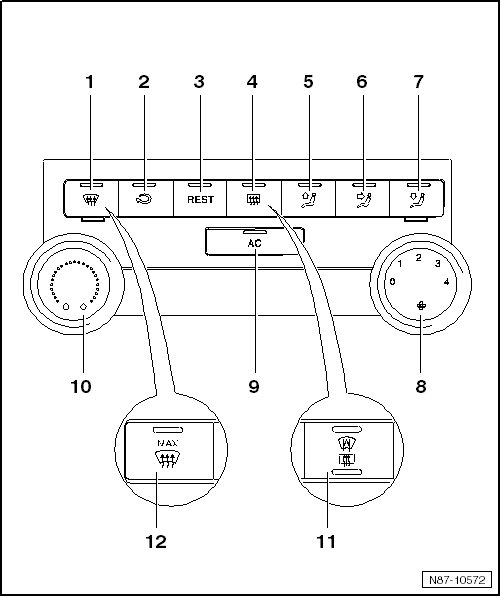

A/C Display Control Head with A/C Control Module
A/C Display Control Head with A/C Control Module

1 Button for defrosting windshield
2 Button for air recirculation
• Press button for recirculating air function to prevent polluted air from entering interior.
3 REST button
• When residual heat function is switched on the residual heat of engine is pumped by a coolant pump to the heat exchanger.
4 Button for rear window heating
• This button can also control the windshield defroster, depending on the vehicle equipment.
5 Button - upper air distribution
6 Button - center air distribution
7 Button - lower air distribution
8 Blower regulator
• Changed blower speed by turning.
9 Push button for A/C system on/off
10 Temperature regulator
• Changed temperature setting by turning.
11 Rear defroster/windshield defroster button
• optional on vehicles with windshield defroster
12 Button for defrosting windshield
• identified with "MAX"